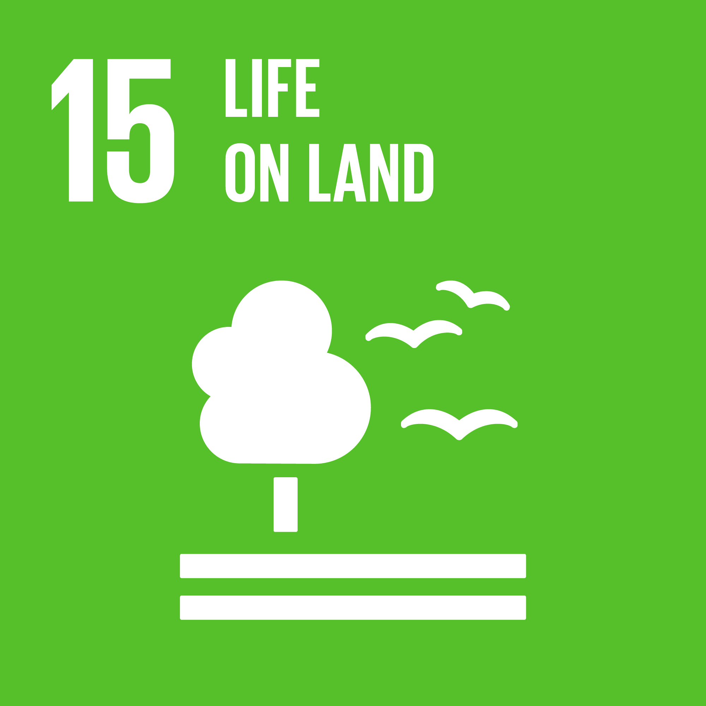
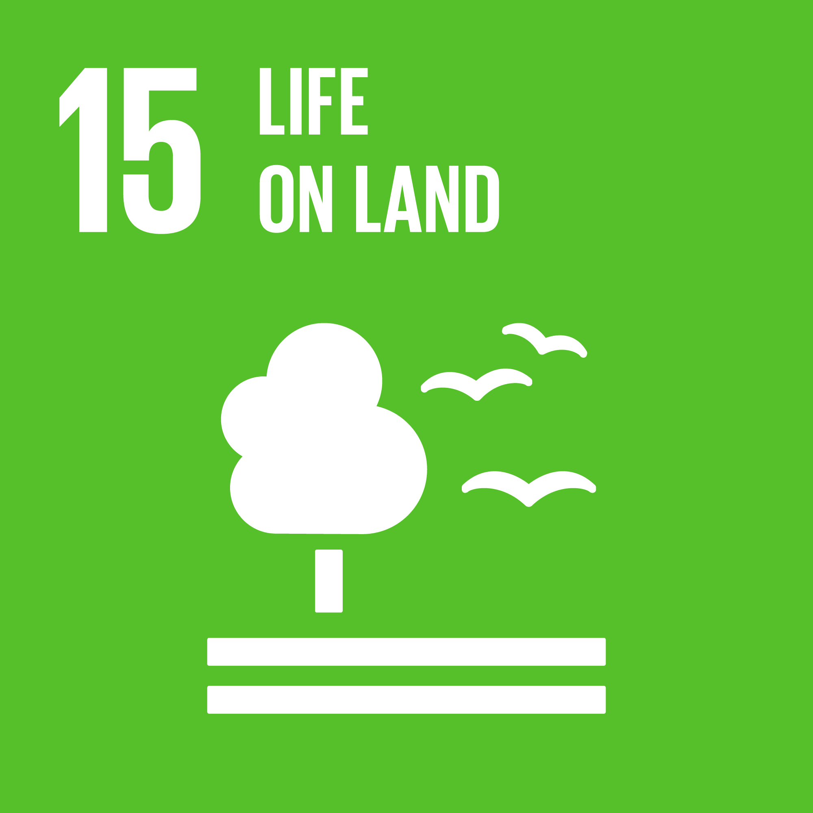

Research & Ongoing Work
Exploring the intersection of remote sensing, ecological modeling, and conservation science. My research integrates remote sensing and predictive environmental modeling to understand the complex interactions driving biodiversity loss under climate change. The broader goal aligns with the UN SDG 13 (Climate Action) and SDG 15 (Life on Land), linking keystone species habitat suitability with carbon credit estimation through life-cycle analysis.
 

Ongoing Project

Fence Removal Effects on Elephant Habitat Utilization Patterns – South Africa
2025 – Ongoing | Collaborative Field Study
Examining the ecological and behavioral responses of elephants following the removal of physical barriers across protected landscapes in South Africa. Using satellite telemetry, habitat suitability modeling, and vegetation indices to evaluate landscape connectivity and ecosystem function restoration.
Completed Projects

Beaver SDM – Climate Shift Diagnostics
2023 | University of Padua – TESAF
Developed species distribution models for Castor fiber to assess habitat fragmentation and climate-induced range shifts under CMIP6 projections. Published in the ISPRS Archives (2024).
View PublicationMaster’s Thesis Supervision (2 Projects)
2024 | University of Padua
- Invasive Species Predictive Modeling in India – Forecasting expansion under future climate projections using ensemble SDMs.
- Timber Tree Habitat Suitability Mapping – Assessing climate resilience and distribution of 26 timber species in South Asia.

Outreach & Conference Proceedings
2025 – Upcoming
Coordinating workshops, policy briefs, and conference presentations focusing on integrating remote sensing and SDM techniques into conservation policy frameworks and nature-based solutions.